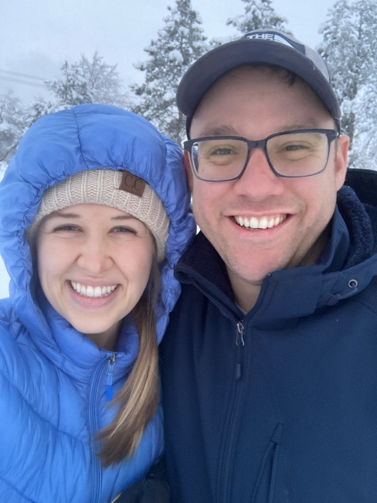

I am 33 years old and grew up in the small town of Snowflake, Arizona. I have lived in Utah for about 5 years now and have enjoyed it. Since moving to Utah, I have lived in Provo, Vineyard, Taylorsville, and now I live in Salt Lake City.
I am currently taking CSE 111 and WDD 130. Last semester, I took my first Python programming class and loved it! I have found a new passion for myself. I have only completed the first weeks worth of assignments for WDD 130, but am already loving it. The more I learn about software development and web diseign, the more clearly I can see how much potential there is for us to have a good career while exploring our creative side at the same time The sky is the limit!.
I am currently engaged to my beautiful fiance, Lexy. She is wonderful and I am grateful for her everyday I am alive. She is a NICU nurse and has a heart of gold. She loves being around babies and eagerly looks towards the day when she will be a mother herself. She is my dream girl.
I look forward to getting to know and learning from all of you. I hope we can support one another during our time together!